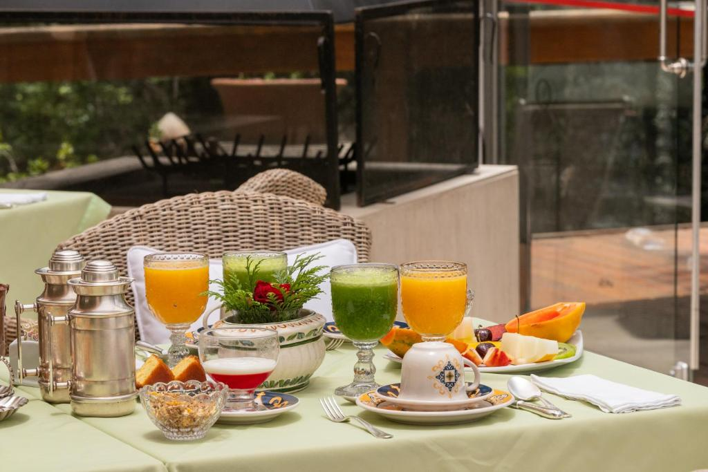
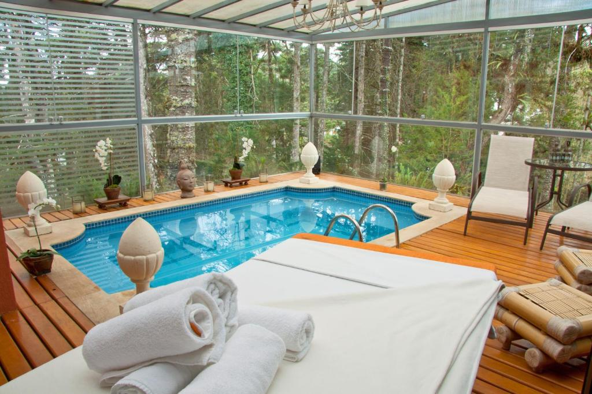
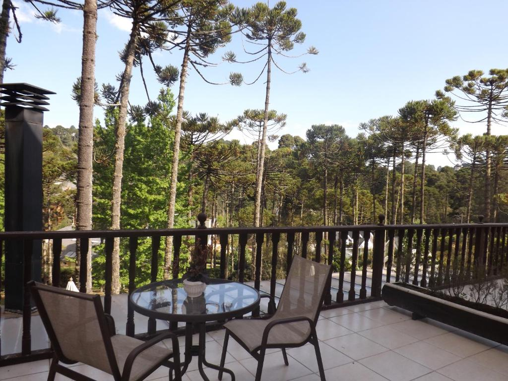
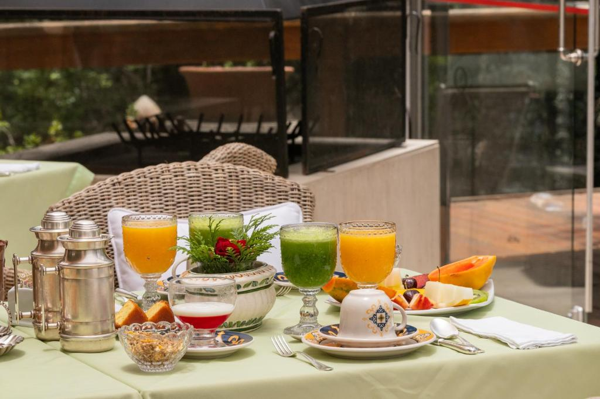
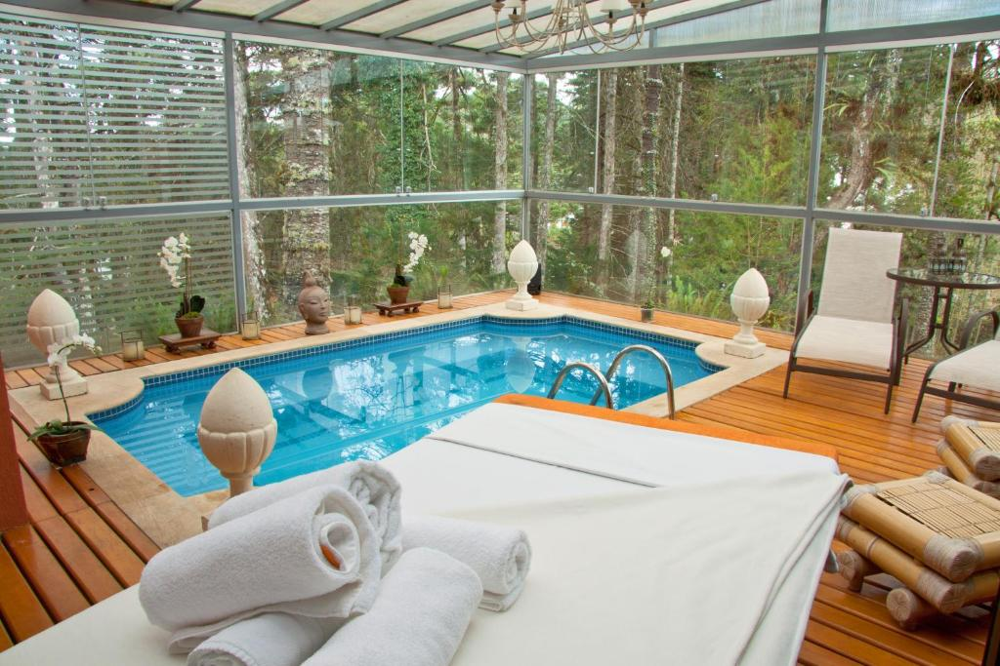
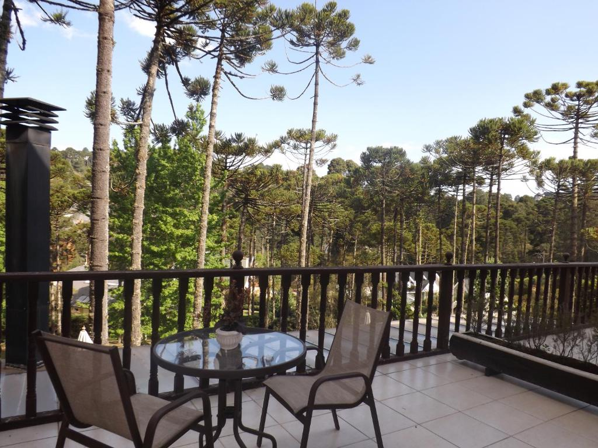
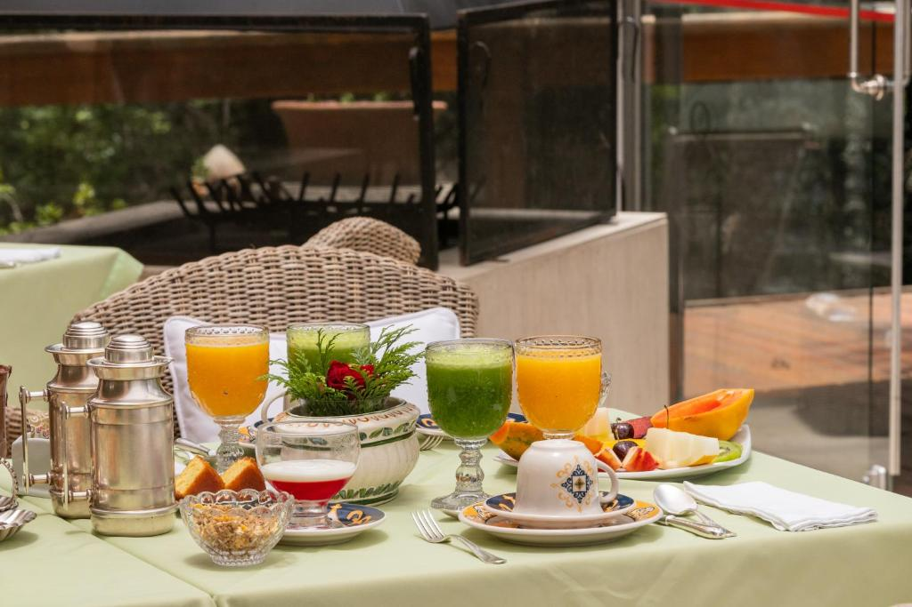
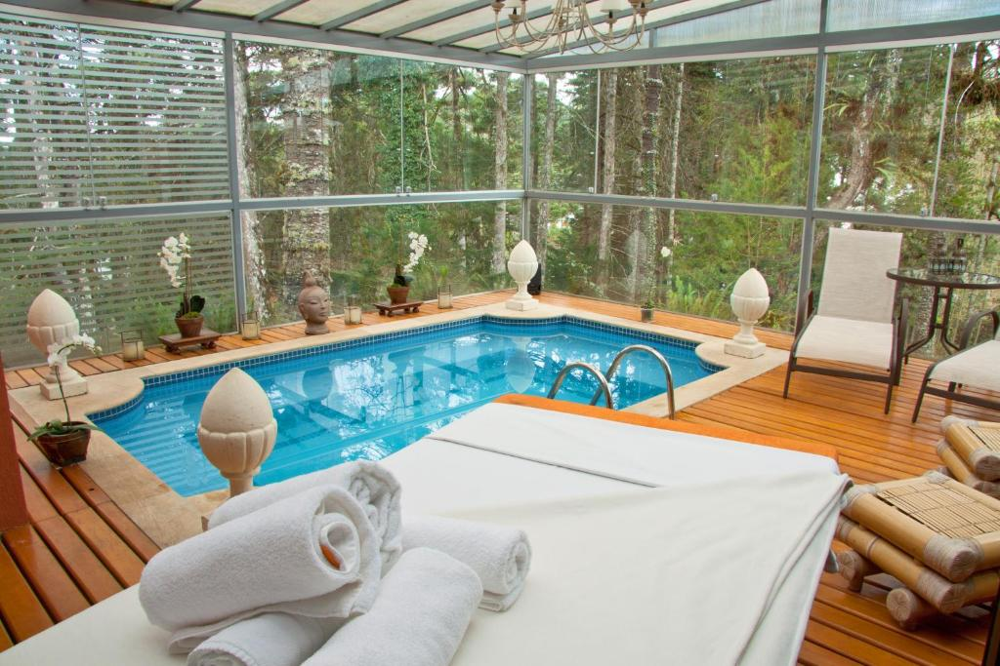
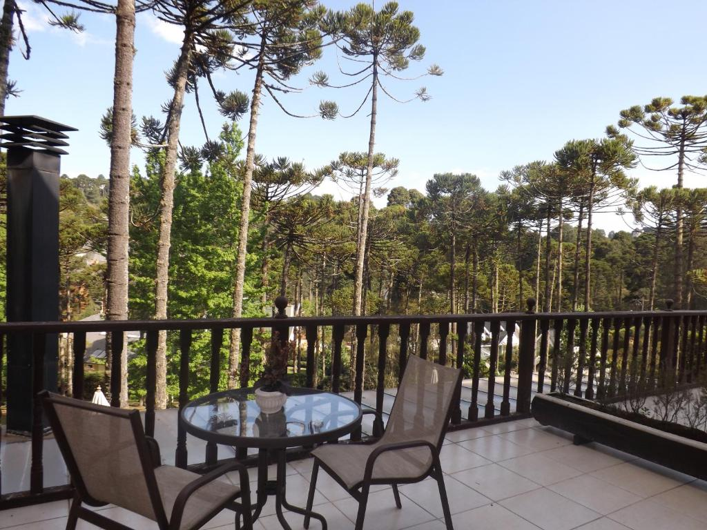

Villa Casato Residenza Boutique
 





O L.A.H. Hostellerie dispõe de piscina ao ar livre aquecida, banheira de hidromassagem, buffet de café-da-manhã, acesso Wi-Fi gratuito e academia. O estabelecimento tem uma localização ideal a apenas 1 km do centro da Vila Capivari.
Todos os quartos do L.A.H. Hostellerie oferecem vista para o vale entre as montanhas, assim como aquecedor, TV de LCD e varanda. Alguns possuem banheira de hidromassagem, adega e área de estar separada, além disso, todos incluem cafeteira.
A cozinha gourmet fornece serviço de quarto com almoço e jantar até às 22:00h e você pode ainda desfrutar de uma seleção de bebidas do bar. Os tratamentos de massagem estão disponíveis e a recepção funciona 24 horas por dia.
| Principais comodidades | ||||
|---|---|---|---|---|
✔ Piscina exterior |
✔ Estacionamento gratuito |
✔ Acesso Wi-Fi gratuito |
✔ Quartos familiares |
✔ Restaurante |
✔ Quartos para não fumantes |
✔ Centro de fitness |
✔ Bar |
✔ Comodidades para fazer chá e café em todos os quartos |
✔ Excecional pequeno-almoço |
Cada quarto do Carballo Spa dispõe de TV e canais via satélite. O banheiro privativo dispõe de chuveiro e secador de cabelo. Você pode desfrutar de vista para o jardim ou para a montanha a partir do quarto. Os extras incluem cofre, cofre para laptop e roupa de cama. Além disso, o frigobar está incluso na diária com água, refrigerante, chocolate e salgadinhos, abastecido uma vez ao dia.
Os hóspedes podem desfrutar de um buffet de pequeno-almoço todas as manhãs, que inclui uma variedade de frutas frescas, pães e charcutaria, bem como uma selecção de bebidas. Um chá da tarde é oferecido como cortesia das 17:00 h às 18:00 h, incluindo uma variedade de bolos, tortas, pães e geleias caseiras.
| Principais comodidades | ||||
|---|---|---|---|---|
✔ Piscina exterior |
✔ Estacionamento gratuito |
✔ Acesso Wi-Fi gratuito |
✔ Spa e centro de bem-estar |
✔ Restaurante |
✔ Serviço de quarto |
✔ Centro de fitness |
✔ Bar |
✔ Comodidades para pessoas com mobilidade condicionada |
✔ Excecional pequeno-almoço |



Idealmente situada em Capivari, esta villa de designer disponibiliza 6 suites luxuosas rodeadas pelas florestas exuberantes de Campos do Jordão. A piscina aquecida e o spa apresentam paredes de vidro com vistas para os jardins floridos.
As suites da Villa Casato Boutique Residenza têm camas luxuosas com lençóis de algodão egípcio e candelabros italianos. Todas as suites incluem uma lareira, algumas elétricas e outras a lenha, assim como uma televisão LCD de 81 cm e acesso Wi-Fi gratuito. Algumas suites possuem varandas, enquanto outras apresentam janelas salientes. Todos os quartos dispõem de vista para o jardim. As suites estão equipadas com aquecimento e as casas de banho privativas têm pisos aquecidos.
O delicioso buffet de pequeno-almoço, composto por crepes, omeletes e pães acabados de preparar na padaria do hotel, é servido no gazebo de vidro, onde os hóspedes poderão observar a natureza circundante e a vida selvagem.
| Principais comodidades | ||||
|---|---|---|---|---|
✔ 2 Piscinas |
✔ Estacionamento gratuito |
✔ Acesso Wi-Fi gratuito |
✔ Spa e centro de bem-estar |
✔ 2 Restaurantes |
✔ Serviço de quarto |
✔ Quartos para não fumantes |
✔ Bar |
✔ Recepção disponível 24 horas |
✔ Pequeno-almoço |
Este elegante hotel está situado num grande parque, apenas a 700 metros do popular bairro de Capivari, em Campos do Jordão. Dispõe de um bar, jardim e Wi-Fi gratuito. Alguns quartos oferecem vistas para a montanha.
Os quartos aquecidos do WE Hotel possuem banheiro e área de estar. As comodidades incluem TV LCD, telefone, cofre, frigobar e cafeteira. Algumas unidades também dispõem de varanda, TV LED e mini-adega
O serviço de quarto está disponível 24 horas por dia e um café da manhã diário também é oferecido.
| Principais comodidades | |||
|---|---|---|---|
✔ Estacionamento gratuito |
✔ Acesso Wi-Fi gratuito |
✔ Spa e centro de bem-estar |
✔ Serviço de quarto |
✔ Quartos para não fumantes |
✔ Bar |
✔ Recepção disponível 24 horas |
✔ Pequeno-almoço |